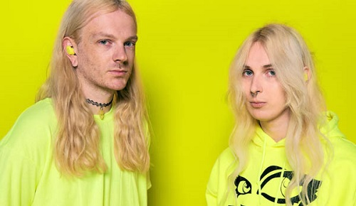

Американский хайперпоп-дуэт, образованный в 2015 году.
Участниками дуэта являются Дилан Брэди и Лаура Лес.
Группа также преобрела популярность в тиктоке. Но отличается от исполнителей, представленных на этом сайте.
В треках 100gecs собрано множество жанров. Музыка понравится не всем. В отличии от русского хайперпопа, здесь присутвует не только
большое количество автотюна и повышенный вокал, но и множество различных звуковых эффектов, много перегруза.
Также слушатели этой группы не являются представительями субкультуры дед инсайдов

Наиболее популярные треки: "Money Machine", "Stupid Horse", "Hand Crushed by a Mallet", "Mememe", "Ringtone".